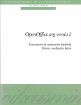

OpenOffice.org julkisissa organisaatioissa

Oikeusministeriön julkaisemasta OpenOfficen Kysymysten ja
vastausten käsikirjasta on ilmestynyt kolmas laitos. Julkaisu on
ilmestynyt sarjassa "Oikeusministeriön julkaisuja" 2007:5
(26.8.2007). Tekijät: Kaisa Karjalainen ja Martti Karjalainen, 374
sivua, PDF-tiedoston koko 8 Mtavua. PDF-muotoinen verkkoversio
löytyy osoitteesta:
Uudessa laitoksessa on sivuja 374, eli vanhaan verrattuna yli
kolminkertainen määrä. Julkaisua saa vapaasti kopioida ja levittää
edelleen. Kolmas laitos ilmestyy aiempien laitosten tapaan myyntiin
Editassa syyskuun 2007 aikana. Käsikirjaa voi tilata Editasta 9
euron hintaan plus postikulut (n. 8 euroa). Tilaus:
Edita Prima Oy
- Puh. 020 450 011
- Sähköposti: asiakaspalvelu.prima@edita.fi
Oikeusministeriö on julkaissut myös joukon mallipohjia yleiseen käyttöön. Vapaasti
saataviin malleihin viitataan myös julkaisuissa.
Oikeusministeriö julkaisi raportin OpenDocument-asiakirjastandardista
OpenDocument on XML-kieleen pohjautuva tiedostomuoto
tyypillisille toimistosovellusten käsittelemille asiakirjoille,
kuten tekstiasiakirjoille, laskentataulukoille ja graafisille
esityksille. XML-rakenne luo edellytykset asiakirjoja käsittelevien
järjestelmien yhteentoimivuudelle ja asiakirjojen sisältämien
tietojen jatkokäsittelyn automatisoinnille. OASIS-yhteistyöjärjestön
kehittämä avoin OpenDocument-tiedostomuoto hyväksyttiin
ISO-standardiksi ISO/IEC 26300 vuonna 2006.
OpenDocument-raportti on laadittu oikeusministeriön OpenOffice-
ja OpenDocument-käyttöönoton yhteydessä suomenkieliseksi
perusinformaatioksi tiedostomuodosta ja sen hyväksikäytön
tietoteknisistä perusteista. Raportissa on kuvattu yleisellä tasolla
OpenDocument-tiedostomuoto, sen rakenne sekä kehittämisen ja
standardoinnin tausta. Raportissa on myös yhteenveto tiedostomuodon
käyttöönottotilanteesta ja avointen tiedostomuotojen EU-tasoisista
suosituksista.
Raportin teknisessä osuudessa on kuvattu tarkemmin tiedostomuodon
rakenne eri asiakirjatyypeille. Tiedostomuodon hyväksikäyttöä on
kuvattu useilla käyttötapauksilla ja niiden toteutuksen
periaatteilla. Käyttötapauksissa käsitellään asiakirjojen käsittelyn
integrointia organisaation tietojärjestelmiin ja integroinnin eri
toteutustekniikoita, OpenOfficen käyttöä palvelintilassa,
UNO-sovellusrajapinnan käyttöä ja XML-tekniikoiden käyttöä
OpenDocument-muotoisten tiedostojen käsittelyssä.
Oikeusministeriö teki vuonna 2006 päätöksen siirtymisestä
OpenOffice.org-ohjelmiston ja OpenDocument-tiedostomuodon
käyttöön. Käyttöönotto on alkanut vuoden 2007 alusta lukien.
Oikeusministeriö julkaisi OpenOfficen Mallioppaan
Malliopas käsittelee mallipohjien, SFS 2487 -vakioasettelun ja
lomakkeiden toteuttamista OpenOffice-ohjelmistolla, sekä tyylien
käyttöä. Oppaan ensimmäinen painos on laajuudeltaan 70 sivua. Opas on
vapaasti ladattavissa osoitteesta http://fi.openoffice.org/dokumentaatio.html. Oppaan
on kirjoittanut Marko Grönroos.
Oikeusministeriö on tehnyt virallisen päätöksen ottaa käyttöön
OpenOffice.org-ohjelmiston ministeriön toimisto-ohjelmana vuoden 2007
alusta lukien. Samassa yhteydessä oikeusministeriössä ja sen
hallinnonalalla otetaan käyttöön OpenDocument-tiedostomuotostandardi
asiakirjojen tallennusmuotona.
Oikeusministeriö julkaisi keväällä
2005 selvityksen, jonka tuloksena suositeltiin siirtymistä
OpenOfficeen. Selvityksen jälkeen käynnistettiin yli 150 henkilöä
käsittänyt OpenOffice-pilotointi, joka päättyi syyskuussa
2006. Pilotointi osoitti, että OpenOfficen toiminnot kattavat
oikeusministeriön hallinnonalan tarpeet ja että ohjelmiston
yhteensopivuus Microsoft Officeen on korkeatasoinen.
Käyttöönoton valmistelutoimenpiteenä ministeriön ja sen
hallinnonalan 10000 Windows-työasemaa varustetaan OpenOffice.org
-ohjelmistolla ja OpenDocument-valmiuksilla vuoden 2006 loppuun
mennessä. OpenOffice.org korvaa ministeriön hallinnonalalla nykyisin
käytössä olevan Lotus SmartSuite -ohjelmiston, ja käyttöönoton
päätyttyä OpenOffice.org kattaa kokonaiskäytöstä noin 85% ja Microsoft
Office noin 15%.
Pilotoinnissa oli käytössä OpenOffice.org versio 2, joka käyttää
asiakirjojen oletustallennusmuotona OpenDocument-standardin mukaista
tiedostomuotoa. OpenDocument on toukokuussa 2006 hyväksytty
kansainväliseksi ISO-standardiksi (ISO 26300).
Oikeusministeriö on julkaissut hankkeeseen liittyen seuraavat
julkaisut:
Toukokuussa ilmestyneestä OpenOfficen kysymysten ja vastausten
käsikirjasta on ilmestynyt uusi laitos. Julkaisu valmistui
22.10.2006 ja on ilmestynyt sarjassa "Oikeusministeriön julkaisuja"
2006:12. PDF-muotoinen verkkoversio löytyy osoitteesta:
Uudessa laitoksessa on sivuja 252, eli vanhaan verrattuna yli
kolminkertainen määrä. PDF-tiedoston kokokin on muhkea 5
Mt. Julkaisua saa vapaasti kopioida ja levittää edelleen. Käsikirjaa
voi tilata Editasta 9 euron hintaan plus postikulut (n. 8
euroa). Tilaus:
Edita Prima Oy
- Puh. 020 450 011
- Sähköposti: asiakaspalvelu.prima@edita.fi
Oikeusministeriö on julkaissut myös joukon mallipohjia yleiseen käyttöön. Vapaasti
saataviin malleihin viitataan myös julkaisuissa.
Oikeusministeriö julkaisi loppuraportin
OpenOffice-siirtymähankkeen pilotoinnista. Raportti perustuu
oikeusministeriössä tehtyyn toimisto-ohjelmien selvitystyöhön, johon
liittyen vuoden 2005 lopussa käynnistettiin OpenOffice-ohjelmiston
pilotointi. Pilotointi käsitti ajanjakson 1.12..2005 - 30.9.2006, ja
siihen osallistui yli 150 henkilöä hallinnonalan virastoista lähinnä
Hämeenlinnan alueelta.
Loppuraportista on luettavissa ilotoinnin tuloksena on selvitetty
OpenOffice.orgin
- toiminnallinen riittävyys hallinnonalan työtehtävien suorittamiseen
- yhteentoimivuus muihin käytössä oleviin toimisto-ohjelmiin siirryttäessä OpenOffice-ohjelmiston käyttöön
- koulutuksen rakenne, sisältö ja koulutusta tukevat aineistot
- käyttöönoton koulutustarve
- käytön tukitarve
- työasemamallinnus ja asennuksen ohjeistaminen
OpenOfficen version 2 jakelu aloitettiin keväällä 2006
oikeusministeriön ja sen hallinnonalan Windows XP -työasemiin. Jakelun
valmistuessa vuodenvaihteessa 2006/2007 OpenOffice on asennettuna
käyttövalmiiksi noin 10 000 Windows XP -työasemaan.
2006:29 Oikeusministeriön OpenOffice-pilotoinnin loppuraportti (PDF, 78 sivua).
Raportti perustuu oikeusministeriössä tehtyyn toimisto-ohjelmien
selvitystyöhön ja vuoden 2005 lopussa käynnistettyyn OpenOffice-ohjelmiston
pilotointiin. Käsikirjassa on kuvattu ja ohjeistettu yksityiskohtaisesti
OpenOffice-version 2 asennusmalli ja sen käyttö oikeusministeriön
hallinnonalalla. Asennusmalli käsittää seuraavat kokonaisuudet:
- suomenkielinen OpenOffice-perusasennus
- perusasennus täydennettynä käyttöasetusten säädöllä
- ruotsinkielisen käyttöliittymävalinnan käyttöönotto
- suomen kielen oikoluvun ja tavutuksen käyttöönotto
- vieraiden kielten oikoluvun ja tavutuksen käyttöönotto
- oman oletustekstipohjan suunnittelu ja käyttöönotto
- MultiSave-lisämoduulin käyttöönotto
- leikekuvakirjaston käyttöönotto
- ruotsinkielisen toimipisteen asennusmalli
Käsikirjassa kuvatulla asennusmallilla aloitettiin keväällä 2006
OpenOffice-version 2 jakelu oikeusministeriön ja sen hallinnonalan Windows
XP -työasemiin. Jakelun valmistuessa vuodenvaihteessa 2006/2007 OpenOffice
on asennettuna tämän mallin mukaisesti käyttövalmiiksi noin 10 000 Windows
XP -työasemaan.
Asennuskäsikirja on laadittu niin, että se olisi käyttökelpoinen sekä
yksityishenkilöille että organisaatioille, jotka harkitsevat OpenOfficen
käyttöönottoa. Käsikirjassa on esitetty kattavasti monet erilaiset
asennusmenettelyt, joista lukija voi valita omaan tarkoitukseensa sopivan
OpenOffice-asennuskokoonpanon. Jokainen asennusmalliin kuuluva menettely on
käsitelty täysin itsenäisenä tekstikokonaisuutena, jonka lukeminen ja
käyttö ei vaadi muiden tekstikokonaisuuksien läpikäyntiä. Esitystavassa on
lisäksi pyritty sellaiseen tarkkuuteen ja havainnollisuuteen, että myös
tietotekniikkaan vähemmän perehtynyt henkilö pystyy vaikeuksitta tekemään
käsikirjassa kuvatut toimenpiteet.
Asennuskäsikirja on julkinen asiakirja, jota saa vapaasti kopioida ja
levittää edelleen.
Oikeusministeriö on julkaissut Kysymysten ja vastausten
käsikirjan, joka sisältää vastauksia OpenOffice.org-pilotoinnin
aikana esille tulleeseen keskeisiin kysymyksiin.
Pilotoinnin aikana syntynyt opas on osa Oikeusministeriön
hanketta siirtää 8 500 nykyistä Lotus SmartSuiten käyttäjää
OpenOffice.orgiin.
Merkittävä osa raportin sisällöstä käsittelee tiedostomuotojen
hallintaa ja yhteentoimivuutta muihin toimisto-ohjelmiin. Raportissa
on kuvattu yksityiskohtaisesti tiedostomuotojen hallinta ja
käytännön periaatteet yhteentoimivuudessa Lotus SmartSuite ja
Microsoft Office -ohjelmistoihin.
Raportissa on kuvattu myös monikielisen asiakirjatuotannon
käyttäminen OpenOfficessa. Mukana on ohjeistus suomen- ja
ruotsinkielisen käyttöliittymän hallintaan sekä useiden eri kielten
oikoluvun ja tavutuksen käyttöön ja käyttöönottoon. Raportissa
arvioidaan myös OpenOfficen toimintojen riittävyyttä ja
monipuolisuutta.
Julkaisu on ladattavissa Oikeusministeriön sivustolta: OpenOffice.org versio
2. Kysymysten ja vastausten käsikirja (pdf).
Kansanedustajat Hanna-Leena Hemming (kok) ja Jyrki Kasvi
(vihr) vaativat, että eduskunnan on aloitettava valmistelu Linuxiin
ja OpenOffice.orgiin siirtymiseksi.
Hemmingin ja Kasvin mukaan valmistelu aloitettava pian, jos
Linuxia halutaan käyttää laajasti eduskunnan työasemissa vuonna 2011
alkavalla vaalikaudella. Heidän mukaansa esimerkiksi
OpenOffice.org-ohjelmiston testaaminen ja pilotointi olisi
aloitettava jo ensi vaalikauden aikana.
Hemmingin ja Kasvin mielestä julkishallinnon tietojärjestelmissä
on pyrittävä avoimiin, standardoituihin tiedon esitysmuotoihin,
jotka eivät sido viranomaisia yhden ohjelmistovalmistajan
asiakkaiksi.
Heidän mukaansa eduskunnan tulisi toimia edelläkävijänä ja
aloittaa siirtyminen avoimen lähdekoodin tietojärjestelmiin ja
avoimiin tiedostoformaatteihin.
Oikeusministeriö on julkaissut selvityksen, jossa annetaan
suositukset oikeusministeriön hallinnonalan 10.000:ssa työasemassa
käytettäviksi tekstinkäsittelyn, taulukkolaskennan ja graafisten
esitysten ohjelmiksi.
Selvityksen mukaan OpenOffice.orgiin vahvasti painottuvan
yhdistelmämallin (85% OOo ja 15% MSO) kokonaishinnaksi tulee alle
puolet puhtaaseen Microsoft Office -pohjaiseen ratkaisuun
verrattuna.
OpenOffice.orgin tärkeimmiksi eduiksi mainitaan korkea
yhteensopivuus Microsoft Officen kanssa, avoin XML-tiedostomuoto,
tuki OASIS OpenDocument XML-standardille, edullinen investointi- ja
käyttökustannus, avoimen lähdekoodin periaatteet ja vähäiset
tietoturvariskit.
Selvityksessä on tarkasteltu laajalti mualla Euroopassa ja
Suomessa tehtyjä ratkaisuja. Ulkomaisista julkisista
OpenOffice.org-ratkaisuista selvitys mainitsee mm. Ranskan poliisin
(80.000 työasemaa) ja sisäministeriön (15.000 työasemaa), Münchenin
(14.000 työasemaa), sekä useita muita. Suomalaisista ratkaisuista
mainitaan mm. Suomen lähi- ja perushoitajaliiton (vajaa 400
työasemaa) ja Invalidiliiton (yli 1000 työasemaa).
|